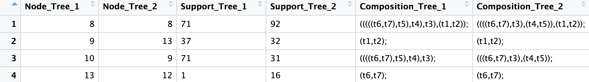
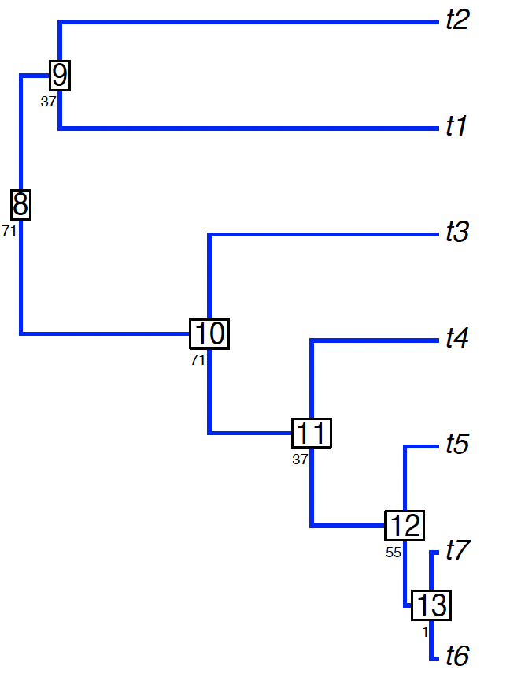
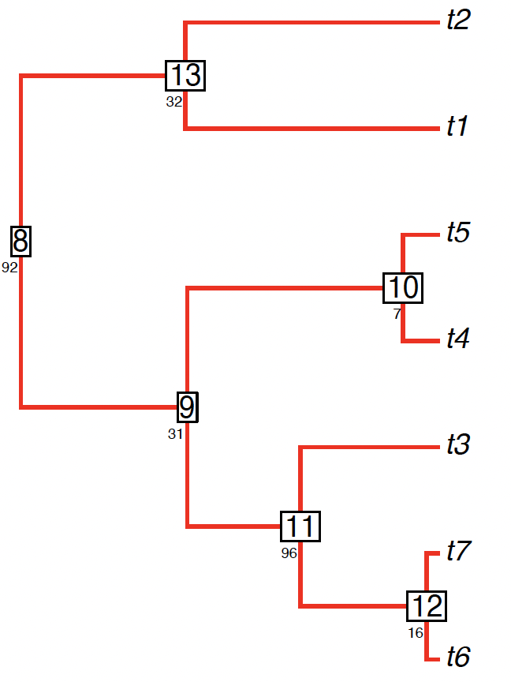
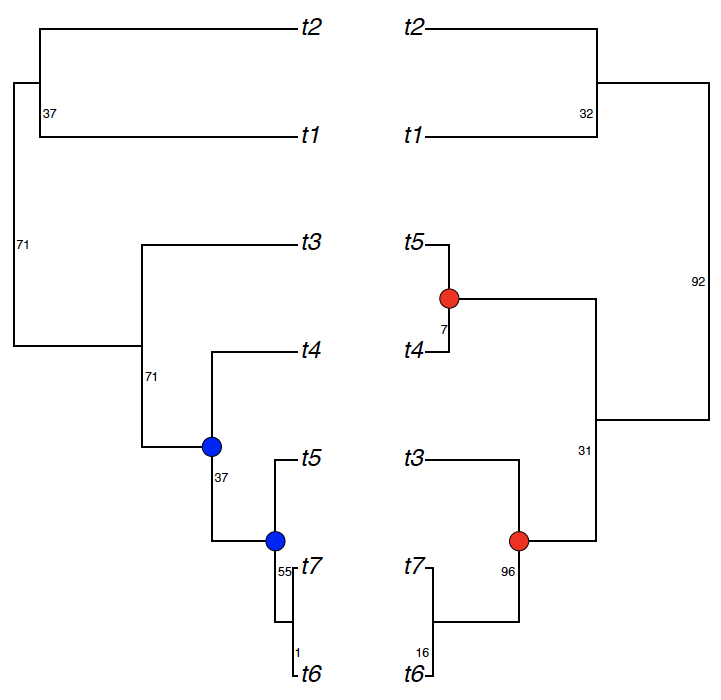
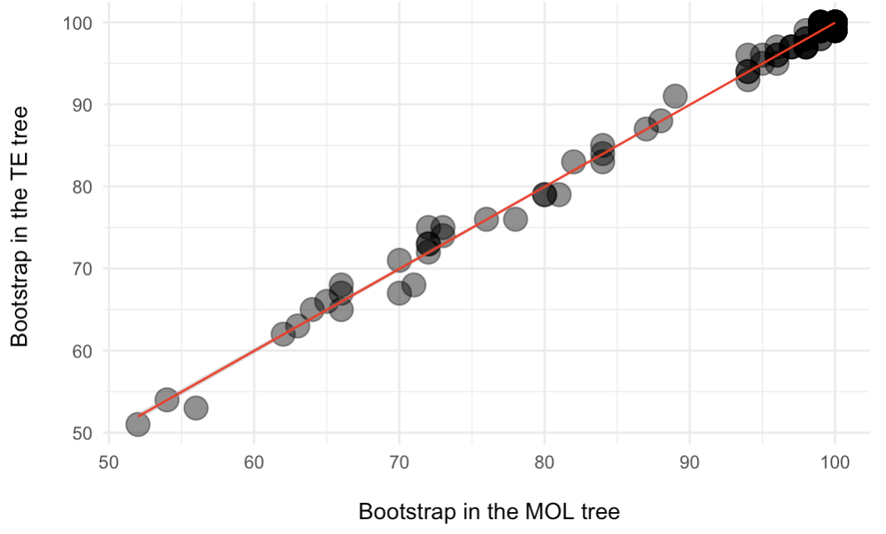
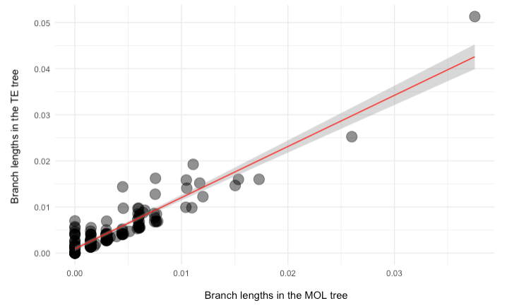

Tree Comparisons
tree-comparisons.RmdIdentify shared and unique clades
Using simple simulations, we can demonstrate how to compare support values between trees. We first simulate two trees containing support values:
library(phytools)
set.seed(44)
# Simulate tree a
a = pbtree(n=7)
# Generate random support values as integers to tree a
node_labels = sample(1:100, a$Nnode, replace = TRUE)
# Add the support values as node labels to tree a
a$node.label = node_labels
set.seed(88)
# Simulate tree b
b = pbtree(n=7)
# Generate random support values as integers to tree b
node_labels = sample(1:100, b$Nnode, replace = TRUE)
# Add the support values as node labels to tree b
b$node.label = node_labels Next, we run sharedNodes to identify matching clades and
their descendants and support values. Additionally, we also can plot the
trees.
library(RNODE)
# Compare shared clades and support values (and plot)
df = sharedNodes(tree1=a, tree2=b, composition=T,
plotTrees = T,
output.tree1="example1.1_simulated1.pdf",
output.tree2="example1.1_simulated2.pdf",
tree.width = 3, # adjust tree width
tree.height = 4, # adjust tree height
tree.fsize = 1, # adjust font size
tree.adj=c(1.2,3), # adjust support position
tree.cex=.5, # adjust support size
node.numbers=T) # show node index



Alternatively, we can identify and plot the unique clades:
uniqueNodes(a, b, composition=T, dataframe=T,
plotTrees=T, output.tree = "example1.1_unique.pdf",
node.numbers=T,
tree.fsize=2, # adjust text size
tree.cex=7.5, # adjust circle size
sup.adj1=c(-.2,4), # adjust support from tree a
sup.adj2=c(1.3,4) # adjust support from tree b
)

Support comparisons
We can use sharedNodes to compare two empirical trees in
.nwk format estimated in TNT. Polytomies and input trees with different
taxon samples are accepted but names of corresponding leaves should be
equal in the input trees. For instance, using the data set from Whitcher
et al. (2025), we can plot the relationship of bootstrap values between
molecular (MOL) and total evidence (TE) trees analyzed in TNT.
library(ggplot2)
# Load trees
MOL = read.tree("../testdata/051b_MOL_BS_TNT.nwk")
TE = read.tree("../testdata/051d_TE_BS_TNT.nwk")
# Run sharedNodes
df = sharedNodes(tree1=MOL, tree2=TE, spearman = T)
# Plot the relationship of support between trees
ggplot(df, aes(as.numeric(Support_Tree_1), as.numeric(Support_Tree_2))) +
geom_point(size = 5, show.legend = F, alpha=.5) +
theme_minimal() +
geom_smooth(method = "lm", se = T, color = "red", linewidth = .5) +
labs(x="\n Bootstrap in the MOL tree",
y="Bootstrap in the TE tree \n")

As expected, there is a significant correlation between bootstrap values of MOL and TE trees (Spearman: rho = 0.89; P < 0.001).
Logistic regressions
If the user wants to test if support values of one tree predict the
occurrence of clades in another tree, the function
retrodictNodes creates a dataframe containing support
values of tree 1 and the occurrence of the clade in tree 2, which can be
used for logistic regressions.
# Load trees
MOL = read.tree("../testdata/001_MOL_IQTREE.contree")
TE = read.tree("../testdata/001_TE_ASC_IQTREE.contree")
# Run retrodictNodes
df = retrodictNodes(MOL, TE)
df$occurrence_tree2 = as.factor(df$occurrence_tree2)
# Fit the logistic regression
model <- glm(occurrence_tree2 ~ support_tree1, data = df, family = binomial)
summary(model)
# Convert log-odds to odd ratios
exp(coef(model))Using the data set from Janssens et al. (2018), the logistic regression revealed an intercept of 0.009 (i.e. when bootstrap is 0 in the first tree, the odds of presence of the clade in the second tree is 0.009; P < 0.01). Furthermore, for every one-unit increase in bootstrap in the first tree, the odds of presence of the clade in the second tree increase by 1.075 (7.5%).
Branch length comparisons
In addition to descendants and support values, branch lengths can be compared.
# Compare branch lengths
RNODE::compareBranchLength(MOL, TE, composition=T)
# Correlation between branch lengths
summary(lm(data=df, formula=EdgeLength_tree1 ~ EdgeLength_tree2))
# Plot
ggplot(df, aes(as.numeric(EdgeLength_tree1), as.numeric(EdgeLength_tree2))) +
geom_point(size = 5, show.legend = F, alpha=.5) +
theme_minimal() +
geom_smooth(method = "lm", se = T, color = "red", linewidth = .5) +
labs(x="\n Branch lengths in the MOL tree",
y="Branch lengths in the TE tree \n")

As expected, there is a significant correlation between bootstrap values of MOL and TE trees (linear model: estimate = 0.78; R-squared = 0.86; P < 0.001).
Topological distances
In addition to comparisons between shared clades, support values and
branch lengths, a popular method to compare phylogenies is based on
topological metrics. Popular metrics like Robinson-Foulds and Cluster
Information distances can be summarized using
summaryTopologicalDist. Moreover, a common topological
metric is the number of SPR moves to edit one tree into another tree.
However, implementations are lacking in R to normalize SPR distances
using the refined upper bound from Ding et al. (2011)
(normalizedSPR) and computing SPR distances for multiple
trees (multiSPR).
# Read trees
mol = read.tree("../testdata/003_MOL_IQTREE.contree")
te = read.tree("../testdata/003_TE_ASC_IQTREE.contree")
# RF and CID
summaryTopologicalDist(mol, te)
# Normalized SPR
normalizedSPR(mol, te)The normalized SPR is 0.1931574.